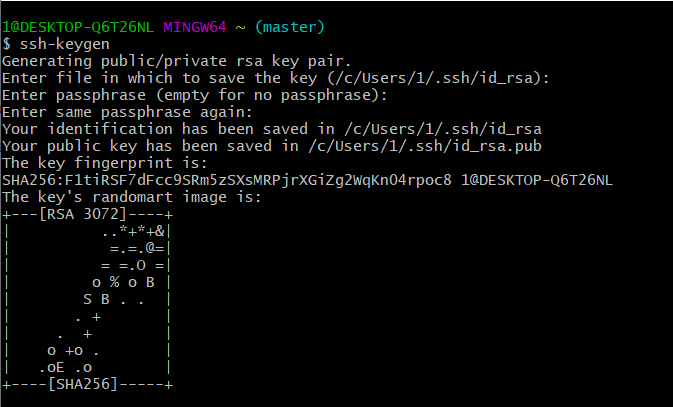

Шпори для Git
Base
- git config --global user.name blabla - встановлює ім'я користувача (одноразово);
- git config --global user.email blabal@bla - встановлює електронну пошту користувача (одноразово);
- git init - ініціалізація git-репозиторія;
- git status - надає інформацію про змінені файли або ті, які вимагають уваги;
- git add -додає файли в коміт;
- git commit - зберігає змінені файли, робить зліпок змін;
- git log - -показує історію змін файлів;
- git checkout - перехід на іншу гілку;
- git branch - створює або керує гілками;
- git push - відправляє файли на віддалений репозиторій;
- git pull - завантажує зміни з віддаленого репозиторію в локальний каталог внесені іншими розробниками;
- git merge - злиття двох гілок;
- git clone -скачує на локальний сервер репозиторій разом зі всією історією змін.
Значення .gitignore
.gitignore - потрібен для приховування файлів і папок від Git.
Advanced
- git revert - скасовує коміт, створюючи новий з іншим змістом;
- git reset - відміняє останній коміт, видаляє його з історії;
- git rebase - об'єднання змін, зроблених в одній гілці, з іншого гілкою;
- git cherry-pick - дозволяє забрати один комміт з іншої гілки і вставити його в поточну;
- git stash - дозволяє на якийсь час «здати в архів» (або відкласти) зміни, зроблені в робочій копії, щоб можна було застосувати їх пізніше.
